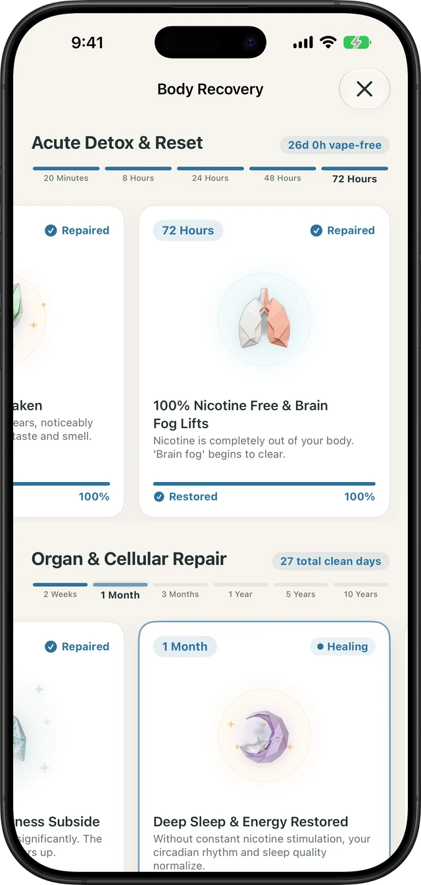

When you decide to put down your vape—whether it's an Elf Bar, Geek Bar, JUUL pod, or refillable mod—your body triggers an immediate, clinical sequence of biological repair. Because modern e-cigarettes deliver high-potency nicotine salts (often 20mg to 50mg/mL) directly to the brain within seconds, quitting vaping initiates unique physiological milestones compared to traditional smoking.
Unlike vague motivational slogans, physical recovery follows a predictable timeline driven by nicotine clearance, autonomic nervous system stabilization, dopamine receptor re-sensitization, and respiratory airway cilia regeneration. Below is what happens inside your body from 20 minutes to 30 days vape-free.
| Milestone Window | Primary Physiological Shift | What You Actually Experience |
|---|---|---|
| 20 Minutes | Nicotine-induced vascular constriction releases; heart rate drops | Pulse stabilizes; cold sensations in hands and feet ease |
| 8 Hours | Circulating nicotine drops by 50%; blood oxygen normalizes | First craving waves; phantom vape reach reflex triggers |
| 24 Hours | Carbon monoxide clears; acute resting heart rate falls | Anxiety and blood pressure begin lowering towards baseline |
| 72 Hours (Day 3) | 100% of nicotine is eliminated from your bloodstream | Physical withdrawal peak passes; taste & smell ("Vaper's Tongue") recover |
| 7 Days | Dopamine receptors begin recalibrating; REM sleep restores | Deeper restorative sleep; fewer midnight micro-awakenings |
| 14 Days | Neurotransmitter reset clears mental lethargy | Severe brain fog lifts; natural focus and memory sharpness return |
| 30 Days | Bronchial cilia regrow; lung airways clear mucus buildup | Morning chest tightness disappears; lung capacity increases noticeably |
| 90 Days | Respiratory airflow capacity improves by up to 30% | Cardio endurance rebounds; chronic throat irritation gone |
20 Minutes to 8 Hours: Acute Cardiovascular Relief & Nicotine Half-Life
Nicotine acts as a potent autonomic stimulant, triggering constant spikes of adrenaline (epinephrine) that narrow your blood vessels and elevate your resting heart rate. Within just 20 minutes of your last puff, this acute vascular squeezing begins to subside, allowing your pulse to settle into a natural cadence.
The biological half-life of nicotine in the human body is approximately two hours. By hour 8, circulating nicotine levels have dropped by over 75%, allowing blood oxygen saturation to rise. This is also when the psychological habit loop hits hardest: you might notice yourself automatically tapping your pocket or searching your desk for your device.
24 to 72 Hours: Peak Detox & Curing "Vaper's Tongue"
Between Day 1 and Day 3, your kidneys and liver work at maximum capacity to filter out cotinine (the primary breakdown metabolite of nicotine). By 72 hours (Day 3), your body is completely 100% nicotine-free for the first time.
- Physical withdrawal peak: Irritability, mild headaches, and digestive fluctuations peak around 48 to 72 hours. Once you cross the 72-hour threshold, physical chemical addiction is broken; from here forward, the journey is purely neurological and behavioral.
- Recovery of Taste & Smell: Vaping high-temperature vegetable glycerin (VG) and synthetic flavorings often causes olfactory fatigue, colloquially known as "Vaper's Tongue". By Day 3, your sensory nerve endings begin regenerating, allowing food, coffee, and fresh air to taste vibrant again.
Built into Quit Vaping
Follow your real-time recovery on your iPhone
Watch your progress across Acute Detox (8h), Taste & Smell Regeneration (72h), Dopamine Recalibration (7d), and Lung Cilia Regrowth (30d) automatically—100% private with zero cloud tracking.
Track My Recovery Free on iOS →
Day 7: Dopamine Re-Sensitization & Restorative REM Sleep
Nicotine salts flood the brain with artificial dopamine spikes that dwarf natural rewards. To prevent neurological burnout, your brain down-regulates its nicotinic acetylcholine receptors. When you stop vaping, daily life can temporarily feel flat or unstimulating during the first week.
By Day 7, neuroimaging studies show that dopamine receptor sensitivity begins to recalibrate. Simple everyday pleasures—a morning workout, laughing with friends, a great meal—begin triggering natural dopamine again. Furthermore, because your brain is no longer undergoing micro-withdrawals throughout the night, deep Rapid Eye Movement (REM) sleep rebounds, dramatically lowering morning exhaustion.
Day 14: Brain Fog Clears & Sustained Focus Returns
One of the most frustrating withdrawal symptoms reported by former vapers is brain fog—a feeling of mental sluggishness, short attention span, and cognitive fatigue. This occurs while the prefrontal cortex adapts to operating without continuous stimulant surges.
By the end of the second week (Day 14), neurotransmitter balance between glutamate and acetylcholine stabilizes. Former vapers consistently report that the "cotton-head" feeling lifts, replaced by steady, uninterrupted mental clarity that doesn't depend on hitting a vape every twenty minutes.
Day 30 to 90: Respiratory Cilia Regrowth & Lung Capacity
Aerosolized e-liquids contain fine particulates that temporarily paralyze the microscopic hair-like structures in your airways called cilia. Paralyzed cilia cannot sweep out trapped dust, mucus, and environmental pollutants.
- Week 3 to 4: As cilia regain mobility, your lungs begin a deep self-cleaning cycle. You may experience a temporary cough or clear phlegm as your airways expel accumulated debris.
- Day 30: Shortness of breath when climbing stairs or working out significantly decreases.
- Day 90: Clinical spirometry testing demonstrates up to a 30% improvement in lung airflow volume. Chronic dry throat and morning wheezing disappear completely.
How to Ride Out Cravings When They Strike
Even after physical detox is complete, psychological triggers—like stress, boredom, or driving—can spark sudden cravings. Neuroscience research demonstrates that an acute craving is like an ocean wave: it swells, peaks for 60 to 90 seconds, and fades within 3 to 5 minutes if you do not feed the behavior.
Using a structured 3-minute tool, such as the 4-7-8 breathing method or Physiological Sigh, rapidly activates your parasympathetic nervous system, lowering your heart rate and allowing the wave to break naturally. Celebrate every milestone, be kind to yourself on tough days, and let your body's extraordinary healing capacity do its work.